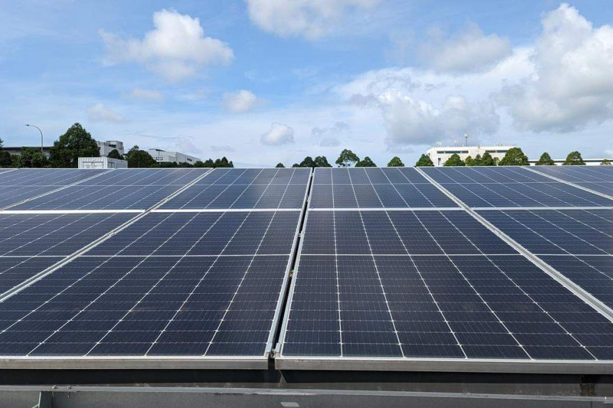
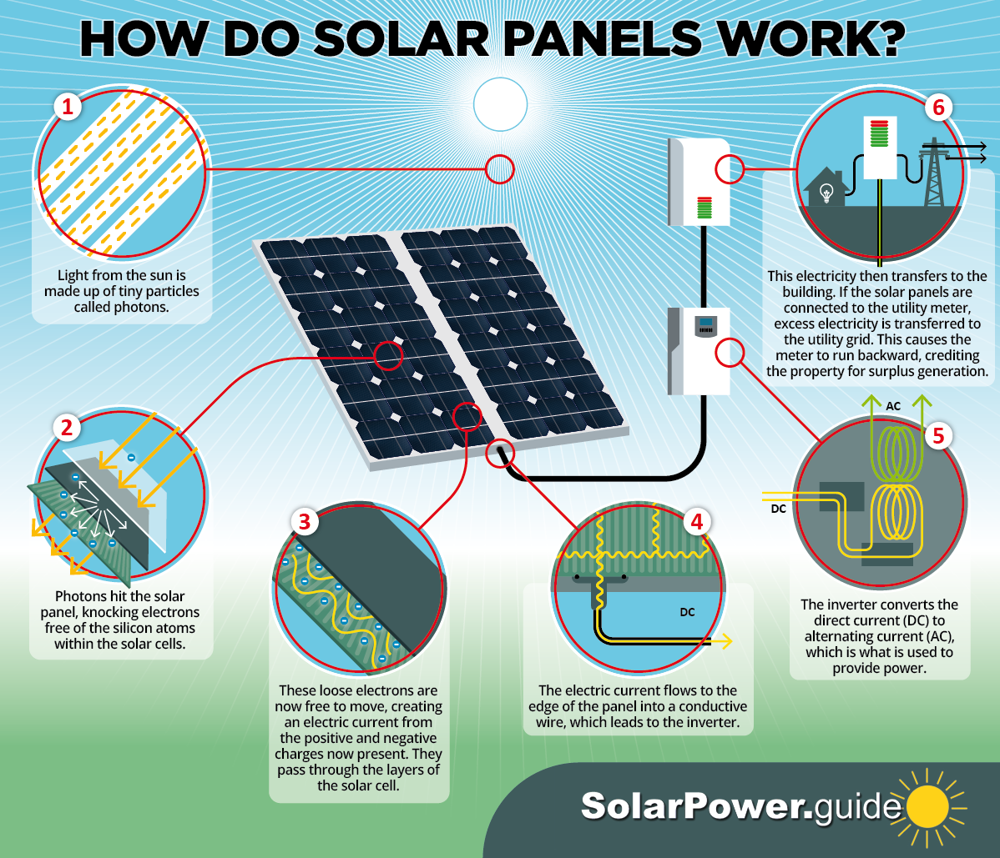

First low carbon technology
Solar panels

What are solar panels?
Solar panels are devices which are used to absorb the sun's rays and convert them into electricity or heat.
What do solar panels do and how do they work?
Solar panels collect clean renewable energy in the form of sunlight and convert that light into electricity which can then be used to provide power for electrical loads.

Pros of solar panels
| |
Reason |
| 1 |
Renewable enegry source |
| 2 |
Reduces electricity bills |
| 3 |
Diverse applications(can generate electricity or heat) |
| 4 |
Low maintenance cost |
| 5 |
Technology development(Technology in the solar power industry is constantly advancing and improvements will intensify in the future.) |
Cons of solar panels
| |
Reason |
| 1 |
Cost-The initial cost of purchasing a solar system is fairly high. |
| 2 |
Dependent on sunlight |
| 3 |
Uses alot of space- Solar PV panels require a lot of space and some roofs are not big enough to fit the number of solar panels that you would like to have. |
Website Content
| Page |
What this page is about |
| 1 |
Home page |
| 3 |
Second Low carbon technology used to capture carbon or increase energy efficiency |
| 4 |
Companies that use these technologies |
| 5 |
The explanation of my thoughts about the impacts and benefits of these technologies to help to promote a green environment. |
| 6 |
Enquiry form |
| 7 |
Sign up page |
2